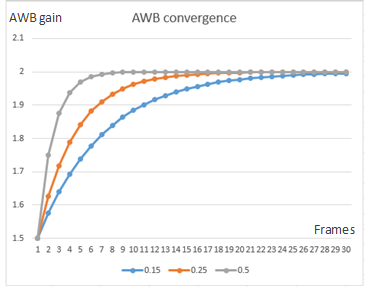

| AWB frame control | |
AWB estimates the illuminant in a given scene based on several factors, including BG stats, scene brightness, and other information, and computes the AWB gain accordingly. Any changes in conditions, such as illuminant, brightness, and camera FOV, influences an AWB decision, which can change significantly from a previous decision.
The temporal convergence module applies a temporal filter to ensure smooth transition from the previous AWB decision to the current decision at a reasonable convergence speed, preventing sudden AWB and color changes. This module does the following:
The temporal convergence module itself has two convergence speed requests: One that can be applied to the first number of frames after the camera starts and one for normal mode.
The convergence speed is computed as follows: final gain = convergence speed * current AWB gain + (1.0 - convergence speed) * previous AWB gain.
The following figure shows an example of AWB convergence from gain 1.5 to 2.0, at convergence speeds of 0.15, 0.25, and 0.5:
